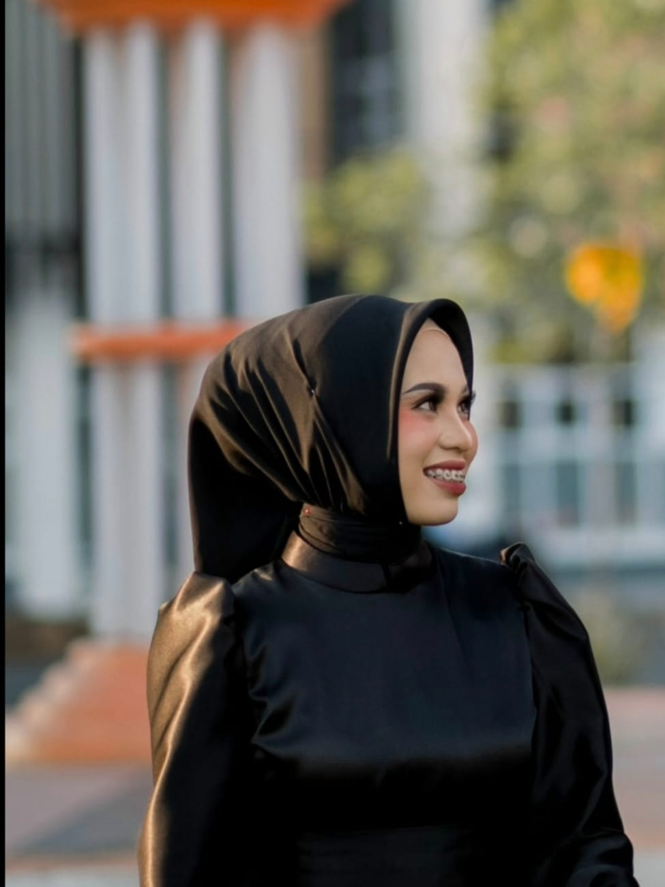

Dua Hati Bersatu Dalam Kehormatan Adat
Kedua Mempelai
Dengan memohon rahmat dan ridho Allah Subhanahu wa Ta'ala, kami mengikat janji suci pernikahan putra-putri tercinta:

Nur Akbar
Putra tercinta dari pasangan:
Keluarga Bpk. H. Syamsuddin
& Ibu Hj. Rosdiana
(Kabupaten Bulukumba)
&

Magfira
Putri tercinta dari pasangan:
Keluarga Bpk. H. Muhammad Idris
& Ibu Hj. Sitti Maryam
(Kabupaten Bulukumba)